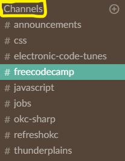
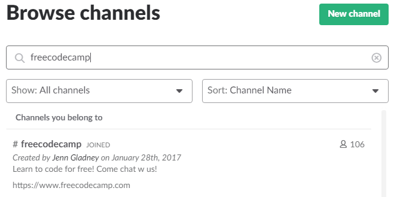

What is Slack?
Slack is an instant messaging and collaboration system on steroids. You can download the program on Slack's website. Also, you can access Slack channels you have joined through the web browser. For example, you can access the Techlahoma Slack by visiting https://techlahoma.slack.com/. If you do not yet have an account for the Techlahoma Slack, you can request one at http://slack.techlahoma.org/.
How to Find Us
Once you are logged into your account in the Techlahoma Slack, click on the "Channels" header on the top of the channels list on the left to browse the list of available channels.
Search for "freecodecamp" and click on it.
When you first click on a channel from the list, you will be previewing it and unable to chat in it. To actually join a channel, click on the "Join" button at the bottom of the window.
Additional Information
For more information about using Slack, visit the Slack Help Page:
https://get.slack.help/hc/en-us
Code of Conduct:
The Techlahoma Code of Conduct applies in the community Slack as well. By following the Techlahoma Code of Conduct in Slack, you are agreeing to exhibit professional and courteous behavior, as well as follow its anti-harassment policy. This ensures that Techlahoma's good reputation is upheld. If you would like to review the Techlahoma Code of Conduct, you may do so at https://www.techlahoma.org/code-of-conduct.
Learn more about Techlahoma's Slack:
https://www.techlahoma.org/spaces
Download Slack Apps for Android and iOS:
Download For Android | Download For iOS